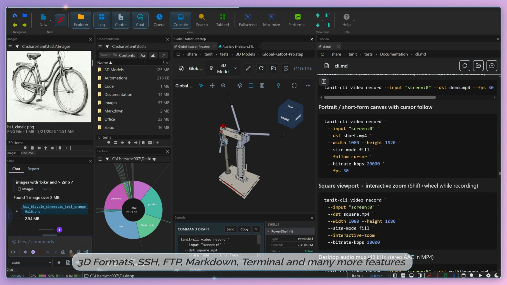
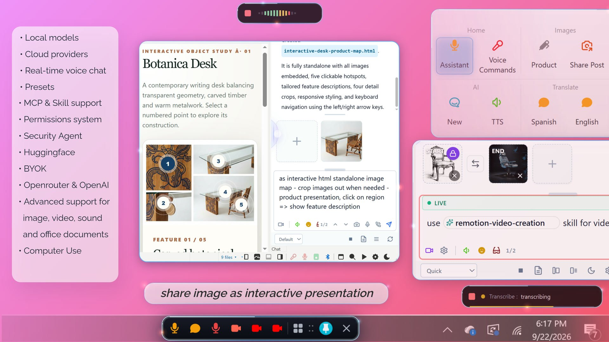
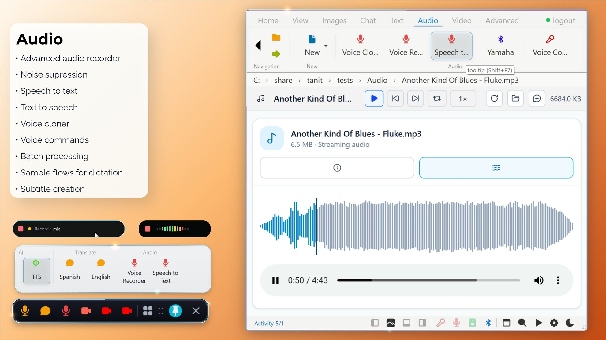
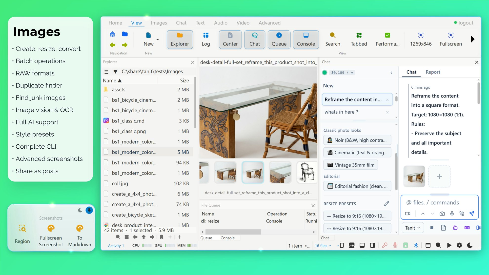
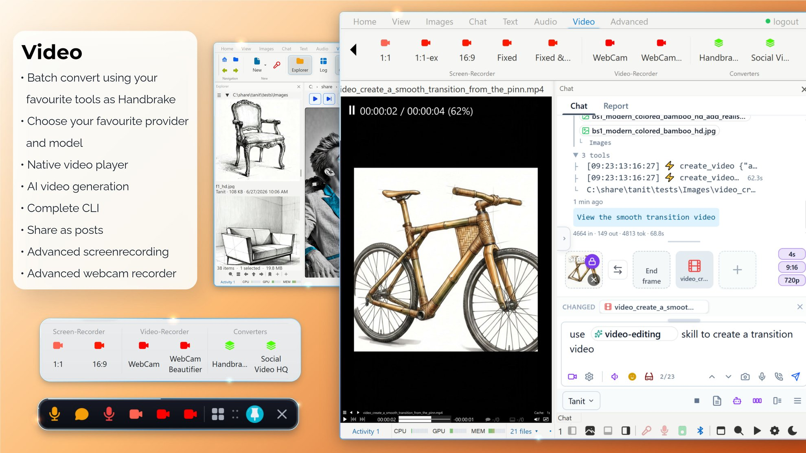
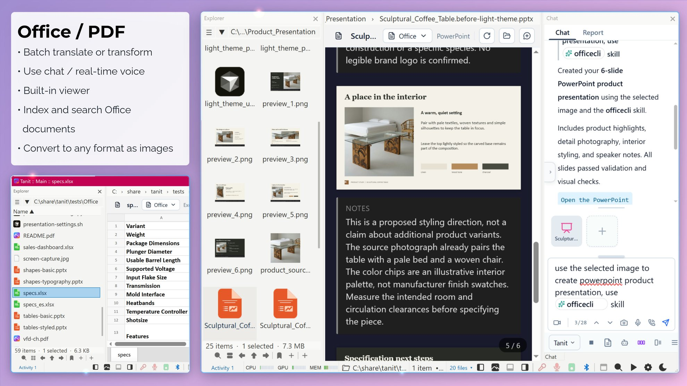
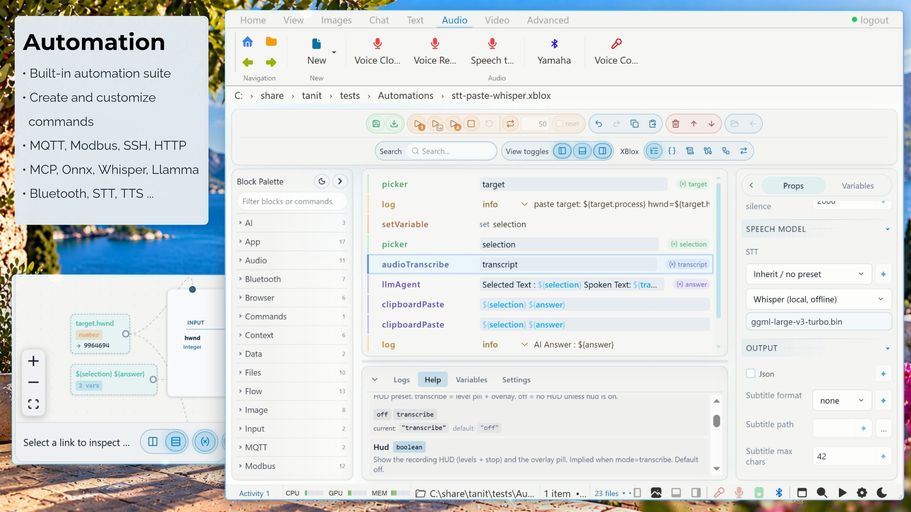
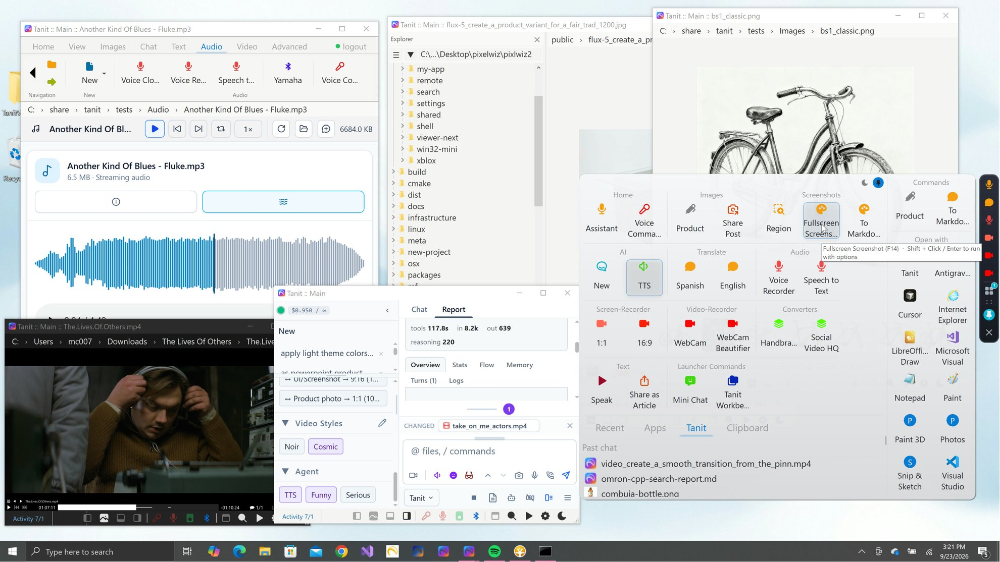
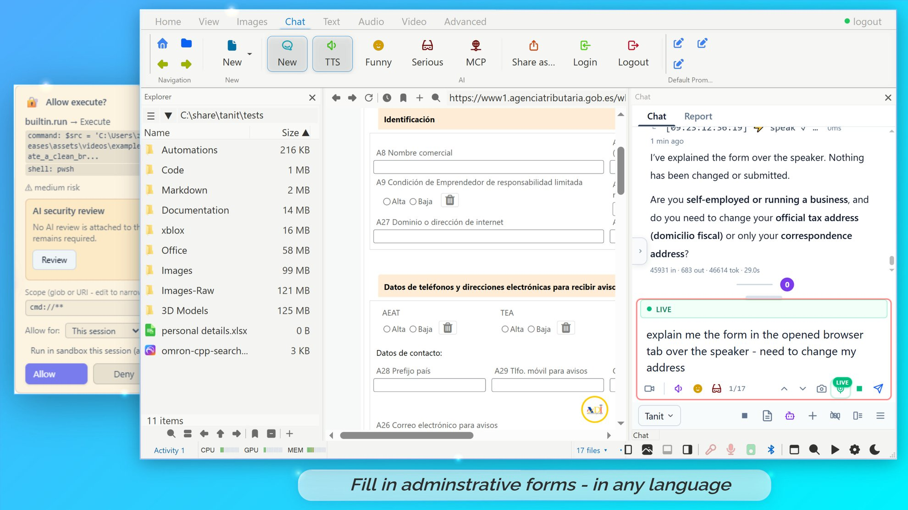

Many tools. One workspace. Local first.
Eight tools, one workspace. Each runs local, cloud, or both — routed per job, never tied to one vendor. Click any screenshot to enlarge.
Select files in Tanit or Windows Explorer and work with them immediately — no separate upload. A visual filmstrip shows exactly what Chat can see before you send.

Connect direct providers, bring your own key, use compatible endpoints, choose an aggregator, or run supported models locally with llama.cpp. Switch models as your needs change.

Transcribe recordings and voice input offline with whisper.cpp. Local speech synthesis can read responses without sending them to a cloud voice provider.

Browse and inspect images, transform media, work with metadata. Use local vision-language models for private image understanding, ONNX for OCR and layout, or route image generation to a cloud provider.

Playback and inspect video, capture webcam or screen, batch convert formats. Session MP4 recording and xblox record blocks — user-started or user-authored scheduled flows only, never covert capture.

Responses support Markdown, tables, code highlighting, KaTeX math, Mermaid diagrams, local file links, generated images, and live shell output. Live XBlox blocks render in the answer; version history tracks changes.

Capture the process as an XBlox flow — combine an LLM agent with file input, models, OCR, vision, audio, conditions, loops, and saved output. Publish it to the ribbon, launcher, Tanit, or the Windows Explorer context menu.



Light, Strict, or Developer profiles. Review the action, target, and risk, then approve once, for a task, for a session, for a limited time, always, or never. Administrators set policy via Windows Group Policy, Intune MDM, or registry; machine policy overrides user settings.
Free for real work · Tanit Pro only when using paid AI routing · Microsoft Store
Fast. Local when you want it. Powerful when you need it.
A lean native C++ architecture is chosen for speed, stability, and a smaller attack surface. Many everyday features run on-device without sending your content to a cloud, and AI stays a replaceable tool inside the workspace — not the foundation that controls it.
Most functionality is free, including local features and local AI models. Tanit Pro is required only when using paid AI routing services — the application does not become useless without cloud services.
Combine local transcription with cloud reasoning, local OCR with online image generation, or local chat with external research tools. You decide when cloud services are worth using.
Give students, teachers, analysts, and other managed users useful AI workflows without giving every assistant unrestricted access to files, tools, providers, or external services.
Use local llama.cpp models, whisper.cpp transcription, ONNX media pipelines, local speech, and local semantic search when data should remain on managed hardware. Administrators can restrict which cloud providers are available.
Apply organization settings through Windows Group Policy, Intune MDM, or direct registry. Machine-level policy takes precedence over user settings, and protected security requirements cannot be lowered by a non-admin user.
Disable MCP entirely or restrict it to approved hosts. Allow or block individual tools, disable computer control and realtime voice, lock provider and model selection, and restrict writable folders.
Enforce encryption, signing, and verification for settings, credentials, prompts, commands, and MCP configuration. Users still see permission requests before sensitive actions are allowed.
Move from model discovery to repeatable experiments without assembling a separate application around every model, file set, or tool.
Resolve repositories and supported GGUF variants, compare quantizations and download sizes, estimate VRAM use, and install model assets for local llama.cpp workflows.
Route text, vision, OCR, transcription, speech, image generation, and research tools independently — llama.cpp, whisper.cpp, ONNX Runtime, cloud APIs, compatible endpoints, and MCP servers in one workflow.
Follow tool calls and command output live, inspect planning and model rounds in the Log view, then save the provider, model, tools, skills, and MCP configuration as a reusable preset.
Capture a successful process in XBlox, add conditions, loops, file inputs, and saved outputs, then publish it as a command for a team or the next dataset.
Start with the files in front of you. Select one or more files, open Chat, and ask your first question. When the task becomes repeatable, capture the successful process in XBlox and publish it as a command for the next file — in the ribbon, the command launcher, Tanit, or the Windows Explorer context menu.
Combine an LLM agent with file input, local or external models, OCR, vision, audio, video, conditions, loops, commands, and saved output.
Pass files selected in Tanit or Windows Explorer to an automation, then process each item or the entire selection.
Place a finished workflow in the ribbon, command launcher, integrated file manager, or Windows Explorer context menu.
Run automations locally, call external providers, or combine both while preserving provider settings, file scope, permissions, and sandbox policy.
Microsoft Store · 9N5F39064NPD · PolyMech.TanitChat